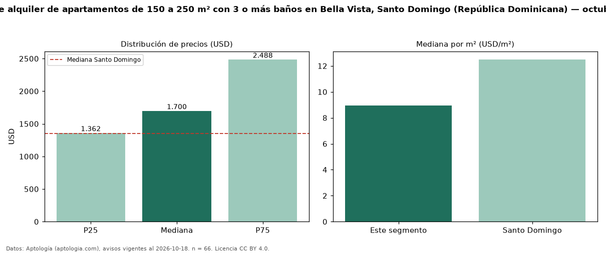

Precio de alquiler de apartamentos de 150 a 250 m² con 3 o más baños en Bella Vista, Santo Domingo (República Dominicana) — octubre 2026
Con 66 avisos vigentes, el canon mediano de apartamentos de 150 a 250 m² con 3 o más baños en alquiler en Bella Vista, Santo Domingo (República Dominicana) es USD 1.700 al mes. Eso es 6 % más que la mediana de los apartamentos de 150 a 250 m² en alquiler de Bella Vista (USD 1.600, n = 86); este segmento reúne el 77 % de esos avisos. Por metro cuadrado, la mediana es USD 8,95/m² al mes (n = 65), 3 % por encima de los apartamentos de 150 a 250 m² en alquiler de Bella Vista (USD 8,65/m²). El área mediana anunciada es 202 m². El segmento con más oferta es el de 3 o más habitaciones (65 avisos, mediana USD 1.700). La mitad central de los avisos va de USD 1.362 a USD 2.488 (razón 1,8), una dispersión moderada. La mediana de todos los apartamentos en alquiler de Santo Domingo es USD 1.350 (+26 % de diferencia). Datos: Aptología (aptologia.com), CC BY 4.0 — https://www.aptologia.com/do/alquiler/santo-domingo/bella-vista. Archivos: PDF, CSV con las cifras y gráfica PNG.

| Avisos únicos | 66 |
|---|---|
| Percentil 25 | COP 1.362 |
| Mediana | COP 1.700 |
| Percentil 75 | COP 2.487 |
| Mediana por m² | COP 8 |
Fuente: avisos vigentes de portales inmobiliarios recopilados por Aptología, deduplicados (mínimo 30 avisos únicos por celda). Precios pedidos, no cerrados. Fecha: 2026-10-18.